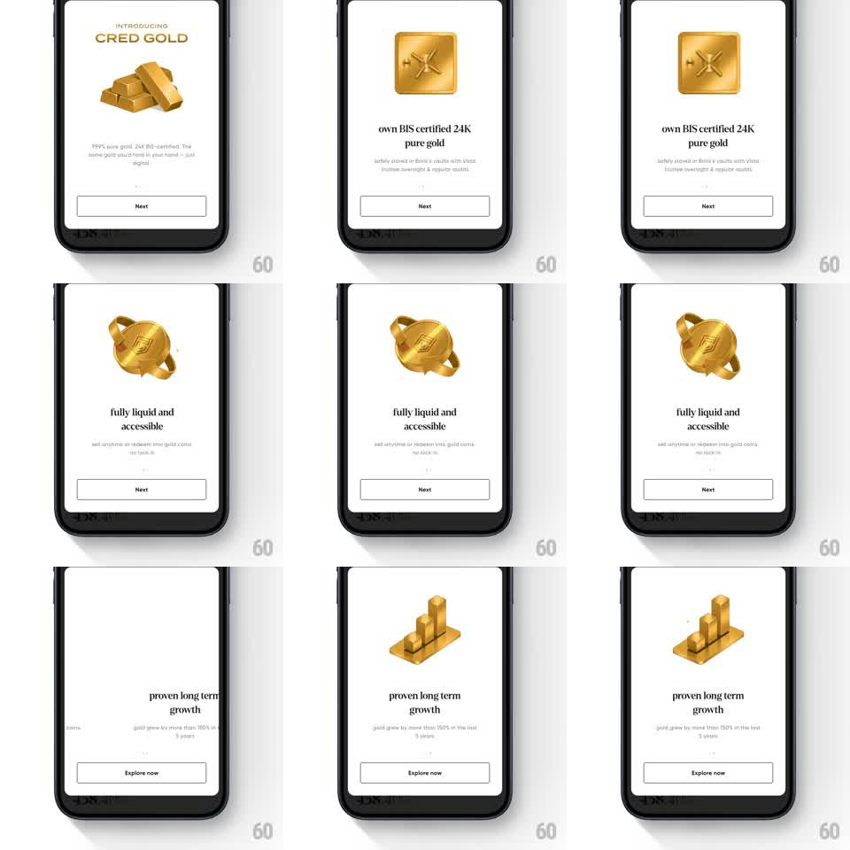

Media
Frame-by-frame

Rebuild this animation 1:1: CRED Gold's onboarding carousel - each page pairs a benefit line with a gold 3D object (biscuit, coin, bar chart) that tumbles in and idles with a slow rotation as you page through.

Rebuild this animation 1:1: CRED Gold's onboarding carousel - each page pairs a benefit line with a gold 3D object (biscuit, coin, bar chart) that tumbles in and idles with a slow rotation as you page through.
## Integration
Integration: stack-agnostic spec - springs given as stiffness/damping, timed motions as duration + curve; map every value to your framework and animation library of choice.
## Scene
CRED Gold intro pages, off-white: "INTRODUCING CRED GOLD" over stacked gold bars, then pager pages - "own BIS certified 24K pure gold" (gold biscuit with the X hallmark), "fully liquid and accessible" (a gold coin with ring handles), "proven long term growth" (ascending gold bars) - each with subcopy and a Next (final: Explore now) button in a bordered pill.
## Motion spec
Pattern: 3D gold-object carousel with tumble-in transitions.
- Page change: the outgoing object tumbles away (rotateY -> -90 degrees, fade, 300ms) while the new one tumbles in from the opposite side (rotateY 90 -> 0, spring ~280/14), landing with a glint sweep across its face (200ms).
- At rest each object idles: slow rotateY oscillation (+/-8 degrees, 4s) plus a float (translateY +/-4px, 3s) - museum-piece lighting with a moving specular highlight.
- Copy blocks crossfade per page (headline 200ms, subcopy 100ms later, slightly rising 8px).
- Page dots under the copy fill sequentially; the button's label rolls (vertical, 200ms) when it becomes "Explore now".
## Calibration
- The gold is metallic - anisotropic highlights, not flat yellow; the glint is the signature beat.
- Objects are centered in a fixed stage; paging never moves the stage, only the object.
## Reduced motion
Objects crossfade (250ms); no idle rotation.
## Don't miss
- The tumble direction matches the swipe direction - forward swipe tumbles left, back swipe tumbles right.
- The intro card ("INTRODUCING CRED GOLD") uses the same gold material so the carousel feels like one cast set of objects.